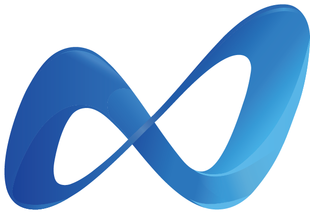

医療は、
まだ非効率的すぎる。
患者が症状を感じてから、適切な診療科・医師・検査・薬にたどり着くまでの導線は、いまも分断されたままです。私たちはこの「医療アクセスの断絶」を解くことから始めます。
時間の断絶
予約が取れない。受付で待つ。診察まで待つ。検査は別日、薬局でも待つ。医療に到達するまでの時間が、長すぎる。
場所の断絶
都市と地方、駅前と郊外、自宅と医療機関。外出が難しい人や忙しい現役世代ほど、医療から遠ざかっていく。
判断の断絶
何科に行くべきか、オンラインでよいのか、検査は必要か。患者自身が判断を迫られ、迷い、受診が遅れていく。

医療を、インフラに。
電気・水道・通信のように、医療が生活圏に当たり前に存在する世界へ。軽くするのは医療の質ではなく、患者が医療にたどり着くまでの負担です。困った時にいつでも駆け込める医療を、私たちはつくります。
AIを前提に設計された、
クリニック運営フォーマット。
予約・問診・オンライン診療・自社カルテ・自社レセコン・会計・経営管理までを一体化。どのMedixus Clinicでも、同じ品質の患者体験を再現します。AIは医師を置き換えるのではなく、医師が診療と意思決定に集中できる環境をつくります。
待たない迷わない
事前問診から受付・診療・会計・薬局連携までを一気通貫で接続。最短15分で、受診から薬の受け取りまでが完結する体験を目指します。
医師は診療に集中する
AI問診サマリと自社カルテが記録の負担を減らす。医師は鑑別・判断・患者説明という、本来の医療に時間を使えます。
再現できる運営標準
システム・業務標準・ブランド・店舗設計までをひとつのフォーマットに。1号店で作った体験を、2号店、そして全国へ。
医療現場の内側から、
医療の当たり前を変える。
私は今、北里大学医学部で医療を学びながら、Medixusを経営しています。医療の最前線で感じてきたのは、「医療そのもの」ではなく「医療にたどり着くまで」に、あまりにも多くの摩擦があるという現実でした。AIは医師を置き換えるためではなく、医師が人にしかできない判断に集中できる環境をつくるためにある——その思想を、事業のすべてに込めています。
代表取締役 CEO 大原 健太郎